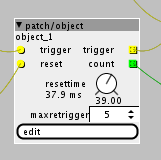

Hi,
I've been tinkering with some axo-objects, editing the code and getting results. Now trying from scratch and not really getting to a useable state. It compiles fine, but it does nothing.
It's an object that should pass triggers only for a certain amount of time, and then stop until it gets a reset signal.

I currently have this K-rate Code, the timing is not even implemented yet
outlet_trigger = 0;
if (inlet_trigger > 0) {
count++;
if (count > maxretrigger) {count = maxretrigger;}
else if (count <= maxretrigger) {outlet_trigger = 1;}
}
if (inlet_reset > 0) count = 0;
outlet_count = count;It's probably very noob/basic but I need some directions to get going...